PC/PHONE/PAD从会议记录工具
变成主动协作的会议Agent


个人超级智能体的多端体验设计

PC/PHONE/PAD从会议记录工具
变成主动协作的会议Agent
从静态截图问答工具
升级为实时空间 AI 助手
{ 体验问题 }
AI 应该在什么时候提醒用户？
提醒是否会打扰用户当前的工作？
如果 AI 误判了场景，谁来纠正？
用户是否可以临时暂停或取消 AI 的介入？
如果错过了提醒，还能如何开启？
AI 现在是否正在记录？
AI 正在识别什么内容？
当用户暂时忽略 AI 提示后，之后还能否找回来？
多 AI 任务并行时，用户如何感知、切换和接管？
当网络、权限或识别出现异常时，用户无法及时发现
去哪里找刚刚的会议纪要？
纪要中的结论来自哪段发言？
会议纪要是一长段文本，难以快速扫读
用户能否在分享之前检查敏感信息和不确定内容？
用户如何判断哪些内容是原始记录，哪些内容是 AI 推断？
从会议场景识别、AI 主动推荐、会中状态反馈，到会后结构化产出和用户接管，完整展示 AI Agent 如何成为可理解、可控制、可信任的会议协作者。
在高置信场景中，通过玲珑台而不是弹窗发出“可见但不强迫”的邀请。用户可忽略、退场或随时手动开启，在低打扰中保留掌控感，让 AI 主动服务而不越界。
玲珑台作为轻量 AI 任务中枢，统筹底层 AI 调度，妙记面板作为前端交互载体，二者状态流转，
全程伴随会议记录，打造可感知、可掌控的智能会议体验。
玲珑台不单是状态提示，而是会议中的轻量AI任务中枢。它承接多项AI并行任务，
让用户在不中断会议的情况下感知状态、切换功能，并随时接管AI执行，建立低打扰、可控的伴随式 AI 协作体验。
根据不同会议内容匹配图文模板，通过 design.md 约束模型输出，将纯文本纪要升级为
层级清晰的，提升信息扫读与理解效率。
纪要不仅停留在总结，还支持编辑、下载保存与分享，待办、负责人和风险点被结构化沉淀为行动入口，
让 AI 产出自然进入团队工作流